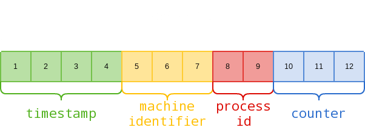

27017,27018 - Pentesting MongoDB
{% hint style="success" %}
学习与实践 AWS 黑客技术： HackTricks 培训 AWS 红队专家 (ARTE)
HackTricks 培训 AWS 红队专家 (ARTE)
学习与实践 GCP 黑客技术： HackTricks 培训 GCP 红队专家 (GRTE)
HackTricks 培训 GCP 红队专家 (GRTE)
支持 HackTricks
- 查看 订阅计划!
- 加入 💬 Discord 群组 或 电报群组 或 关注 我们的 Twitter 🐦 @hacktricks_live.
- 通过向 HackTricks 和 HackTricks Cloud github 仓库提交 PR 分享黑客技巧。
.png)
加入 HackenProof Discord 服务器，与经验丰富的黑客和漏洞赏金猎人交流！
黑客见解
参与深入探讨黑客的刺激与挑战的内容
实时黑客新闻
通过实时新闻和见解，跟上快速变化的黑客世界
最新公告
了解最新的漏洞赏金计划和重要平台更新
今天就加入我们的 Discord，与顶尖黑客开始合作吧！
基本信息
MongoDB 是一个 开源 数据库管理系统，使用 文档导向数据库模型 来处理多种形式的数据。它为管理大数据分析和内容管理等应用中的非结构化或半结构化数据提供了灵活性和可扩展性。默认端口： 27017, 27018
PORT STATE SERVICE VERSION
27017/tcp open mongodb MongoDB 2.6.9 2.6.9
枚举
手动
from pymongo import MongoClient
client = MongoClient(host, port, username=username, password=password)
client.server_info() #Basic info
#If you have admin access you can obtain more info
admin = client.admin
admin_info = admin.command("serverStatus")
cursor = client.list_databases()
for db in cursor:
print(db)
print(client[db["name"]].list_collection_names())
#If admin access, you could dump the database also
一些MongoDB命令：
show dbs
use <db>
show collections
db.<collection>.find() #Dump the collection
db.<collection>.count() #Number of records of the collection
db.current.find({"username":"admin"}) #Find in current db the username admin
自动
nmap -sV --script "mongo* and default" -p 27017 <IP> #By default all the nmap mongo enumerate scripts are used
Shodan
- 所有 mongodb:
"mongodb server information" - 搜索完全开放的 mongodb 服务器:
"mongodb server information" -"partially enabled" - 仅部分启用认证:
"mongodb server information" "partially enabled"
登录
默认情况下，mongo 不需要密码。
Admin 是一个常见的 mongo 数据库。
mongo <HOST>
mongo <HOST>:<PORT>
mongo <HOST>:<PORT>/<DB>
mongo <database> -u <username> -p '<password>'
nmap脚本：mongodb-brute 将检查是否需要凭据。
nmap -n -sV --script mongodb-brute -p 27017 <ip>
暴力破解
查看 /opt/bitnami/mongodb/mongodb.conf 以了解是否需要凭据：
grep "noauth.*true" /opt/bitnami/mongodb/mongodb.conf | grep -v "^#" #Not needed
grep "auth.*true" /opt/bitnami/mongodb/mongodb.conf | grep -v "^#\|noauth" #Not needed
Mongo Objectid 预测
示例 来自这里。
Mongo 对象 ID 是 12 字节十六进制 字符串：

例如，以下是我们如何解析应用程序返回的实际对象 ID：5f2459ac9fa6dc2500314019
- 5f2459ac: 1596217772（十进制）= 2020年7月31日星期五 17:49:32
- 9fa6dc: 机器标识符
- 2500: 进程 ID
- 314019: 增量计数器
在上述元素中，机器标识符只要数据库在同一物理/虚拟机上运行就会保持不变。进程 ID 只有在 MongoDB 进程重启时才会更改。时间戳每秒更新一次。通过简单地递增计数器和时间戳值来猜测对象 ID 的唯一挑战在于 MongoDB 在系统级别生成和分配对象 ID。
工具 https://github.com/andresriancho/mongo-objectid-predict，给定一个起始对象 ID（您可以创建一个帐户并获取起始 ID），它会返回大约 1000 个可能分配给下一个对象的对象 ID，因此您只需对它们进行暴力破解。
Post
如果您是 root，您可以 修改 mongodb.conf 文件，以便不需要凭据（noauth = true）并且 无需凭据登录。
加入 HackenProof Discord 服务器，与经验丰富的黑客和漏洞赏金猎人交流！
黑客见解
参与深入探讨黑客的刺激和挑战的内容
实时黑客新闻
通过实时新闻和见解，跟上快速变化的黑客世界
最新公告
了解最新的漏洞赏金启动和重要平台更新
加入我们 Discord，今天就开始与顶级黑客合作！
{% hint style="success" %}
学习和实践 AWS 黑客技术：HackTricks 培训 AWS 红队专家 (ARTE)
学习和实践 GCP 黑客技术：HackTricks 培训 GCP 红队专家 (GRTE)
支持 HackTricks
- 查看 订阅计划!
- 加入 💬 Discord 群组 或 电报群组 或 关注 我们的 Twitter 🐦 @hacktricks_live.
- 通过向 HackTricks 和 HackTricks Cloud github 仓库提交 PR 来分享黑客技巧。